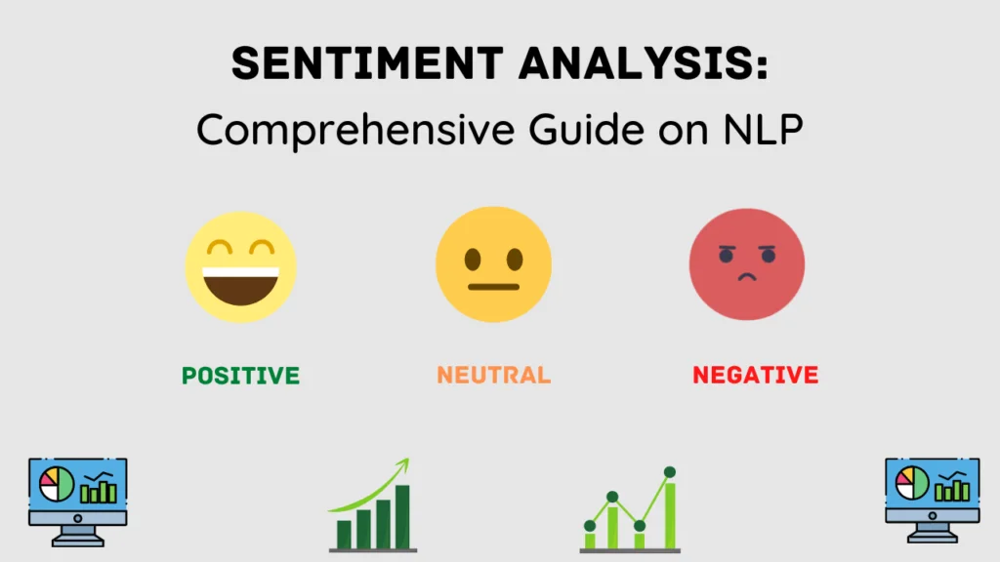

Projects

Vegetable & Fruit Classifier
CNN-powered Streamlit app to classify fruits and vegetables in real-time from images.
View Project

Multilingual Sentiment Analysis
Transformer-based NLP system to detect emotional tones in multiple languages.
View Project